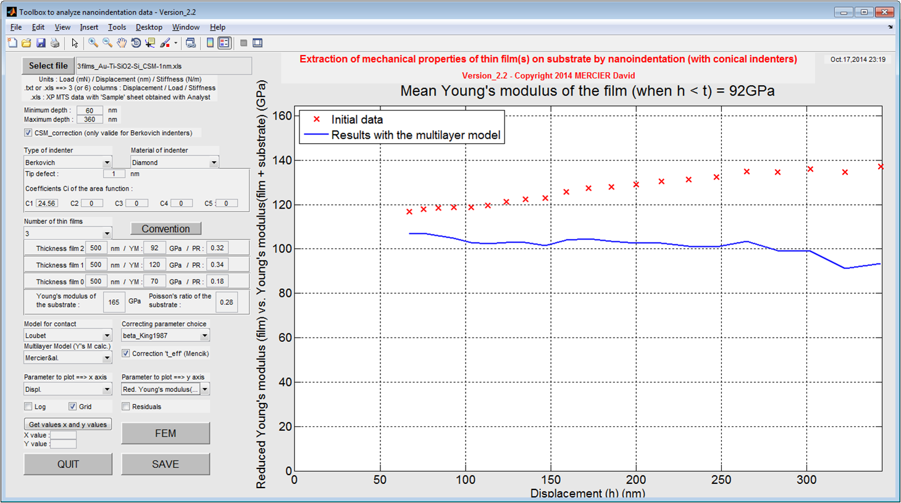

How to use the GUI for indentation data analysis ?
This MATLAB GUI (Graphical User Interface) has been developed to plot and to analyze (nano)indentation data (obtained with conical indenters).
It is possible to calculate with this GUI :
- Coefficient of the power law fit of the load-displacement curve;
- Energy of the loading (area below the load-displacement curve);
- Young's modulus and Hardness of bulk materials;
- Young's modulus of thin films on a substrate (for a bilayer or a multilayer sample (⇒ 3 layers on a substrate)).

Contact : MERCIER David (d.mercier@mpie.de /
david9684@gmail.com)